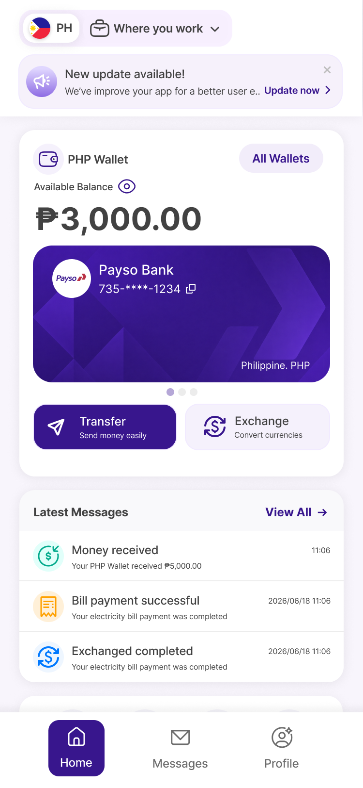
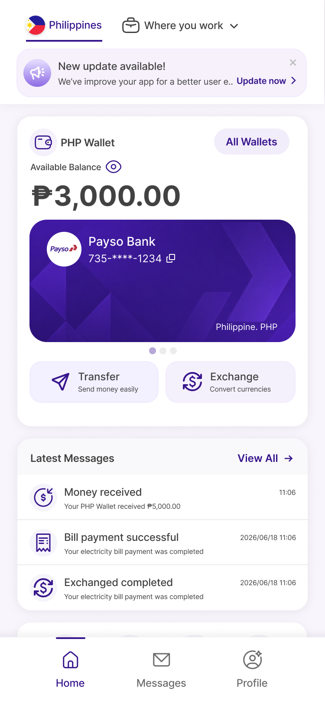
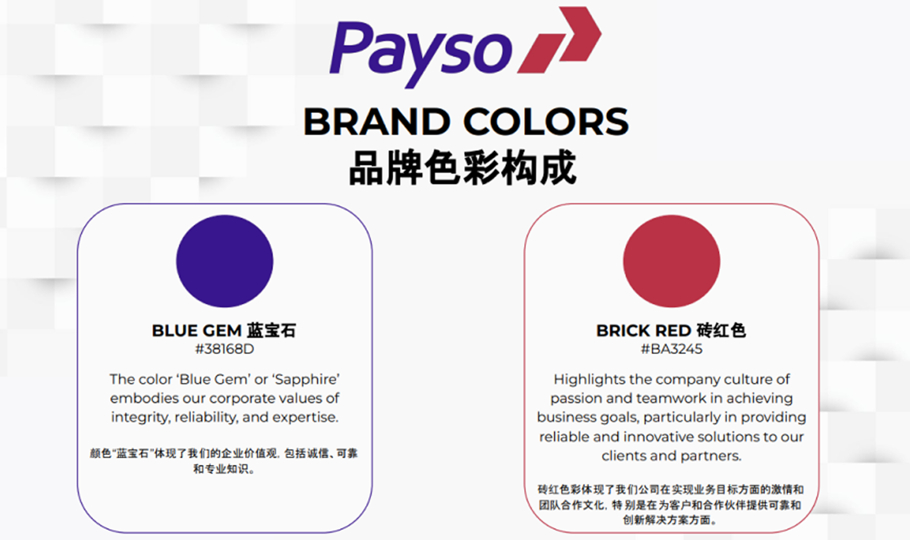
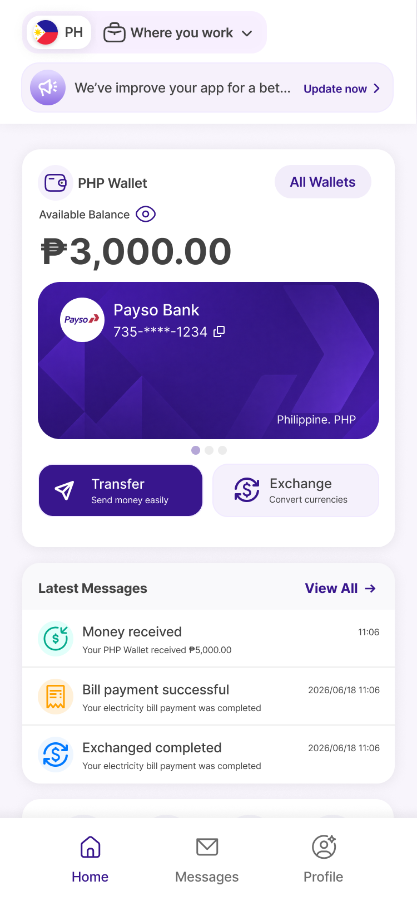

01 / 07
UI Design Exploration
Theme 01
Theme 01
Blue Gem
Five interface variations exploring navigation, actions, content structure, and icon treatment.
Blue Gem#381C8D
Brick Red#BA3245


02 / 07
Brand Inspiration
Trust with
Trust with
energy.
Blue Gem leads the interface. Brick Red remains a focused brand accent.
Primary interface and active states
Brand accent and emphasis

03 / 07
Theme 01 · Sample 1
01
Bold Active Navigation
Strong emphasis on the selected tab and primary Transfer action.
Contained active tabTwo-line actionsMulticolor status icons
04 / 07

Theme 01 · Sample 2
02
Minimal Navigation
A lighter bottom navigation treatment with less visual weight.
Minimal active tabTwo-line actionsMulticolor status icons
05 / 07
Theme 01 · Sample 3
03
Soft Tile Navigation
A softer selected state paired with compact, single-line action buttons.
Soft active tileSingle-line actionsMulticolor status icons
06 / 07
Theme 01 · Sample 4
04
Structured Message Header
Keeps the soft navigation while adding clearer separation above the message list.
Soft active tileSingle-line actionsSection divider
07 / 07
Theme 01 · Sample 5
05
Top Tab Direction
Moves country selection into a top tab and uses one-color system icons.
Top tab selectorNeutral action buttonsMonochrome status icons